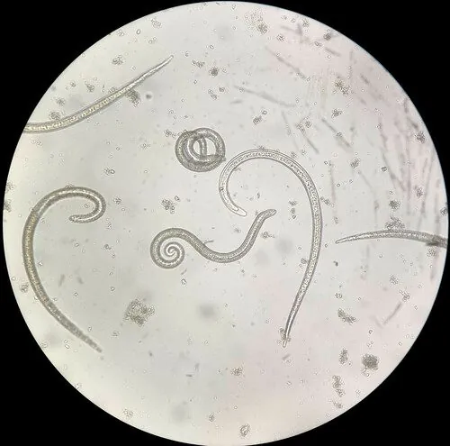

其他无脊椎动物 · 动物界
旋毛虫 Trichinella spiralis

幼虫在横纹肌中形成囊包的线虫，因食用未煮熟的猪肉或野味而感染，引起发热、肌痛与眼眶水肿，重在肉类彻底加热。
- 分类
- 门线虫动物门纲线虫纲目毛形目科毛形科属毛形线虫属
- 栖息环境
- 哺乳动物的小肠黏膜与横纹肌纤维内，幼虫形成囊包
- 地理分布
- 世界性分布，猪、野猪、熊、犬、鼠及多种野生动物均可感染
- 保护级别
- 无保护问题；为食源性寄生虫，防控靠肉类彻底加热
物种志
旋毛虫是一种寄生于哺乳动物小肠和横纹肌的线虫，成虫细长，雄虫长约一点五毫米，雌虫长约三毫米。雌虫在肠黏膜内产出幼虫，幼虫随血流到达横纹肌，在肌纤维内卷曲并形成梭形的囊包，囊包钙化后可在肌肉中存活多年。人吞食含活囊包的肉类后，囊包在胃内被消化，幼虫释放并在小肠发育为成虫，完成一个循环。
它呈世界性分布，宿主包括猪、野猪、熊、犬、鼠和多种野生动物。感染途径是食用未煮熟的含囊包肉类，猪肉、野猪肉、熊肉和腌腊生肉都是常见来源；切生肉的刀板和容器污染熟食也可造成感染。感染后一至两周出现腹痛、腹泻，随后幼虫入肌引起发热、肌肉酸痛、眼睑水肿和乏力，严重时可累及心肌和中枢神经。防护的关键是把肉彻底加热到中心温度七十一摄氏度以上，或按规范冷冻处理，生熟刀板分开，不食用来源不明的野味和生腌肉。目前尚无疫苗，治疗需在医生指导下使用抗虫药物。
形态与习性
- 成虫雄虫约一点五毫米，雌虫约三毫米
- 囊包幼虫卷曲于横纹肌纤维内形成梭形囊包
- 感染途径食用未煮熟的含囊包猪肉或野味
- 其他途径生熟刀板混用造成熟食污染
- 症状发热、肌肉酸痛、眼睑水肿与乏力
- 防护肉类加热至中心七十一摄氏度以上或规范冷冻
趣味知识
- 它的幼虫在肌肉里卷成一团，外面裹一层囊包，能存活很多年。
- 腌腊和风干并不等于熟透，囊包在咸肉里照样活着。
- 把肉煮到中心七十一摄氏度以上，是最可靠的预防办法。